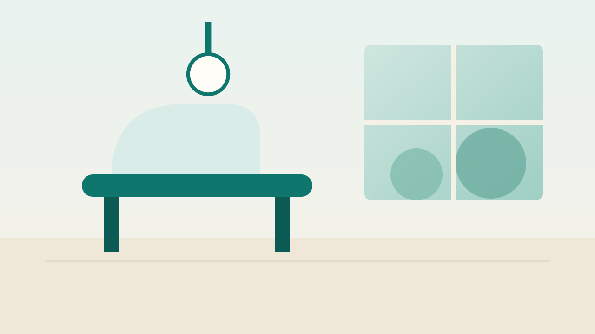

What to expect at your first check-up

A first check-up is mostly a conversation. We ask how your teeth feel, look at your gums, and take the x-rays we need, and nothing else happens without your say-so.
Before you arrive
Bring a list of any medicines you take and, if you have them, old x-rays from another clinic. Arriving ten minutes early leaves time for the short health form.
If you feel anxious
Tell the front desk when you book. We schedule a longer slot, explain each step before we start and agree a hand signal for "pause".
What we check
- Each tooth for decay, cracks and worn fillings
- Your gums for bleeding and pocket depth
- Your bite, jaw joint and the soft tissue of your mouth
How long it takes
- Health form and a short chat · 10 minutes
- Examination and x-rays · 20 minutes
- Your plan, with prices, in writing · 10 minutes
You leave with a written plan and a price for each step, and there's no pressure to book anything that day.
Book a consultation at our Lekki clinic
Book nowMost people are in and out within the hour. If you need treatment, we explain the options and the cost of each before anything is scheduled.